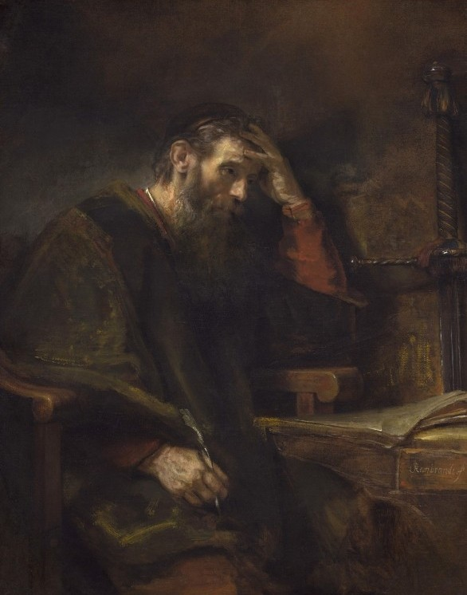

Sartre contesta a segurança de Descartes: se o 'Eu' existe, onde ele habita? Ao tentar se imaginar, você talvez visualize seu rosto ou seu nome, mas quem é o observador por trás dessas imagens? Sartre sugere que o 'Eu' não é uma coisa pronta dentro de nós, mas um vazio, uma liberdade radical. Não somos o que imaginamos ser; somos a própria consciência que imagina, livre de qualquer essência pré-definida.
"Só podemos afirmar a realidade de uma única coisa: a nossa própria existência. Para que haja uma afirmação, é necessário que exista alguém que a faça. Daí surge a máxima: 'Penso, logo existo'. Mesmo que o mundo exterior fosse uma ilusão, restaria algo genuíno em nosso interior — a mente consciente. Para Descartes, o 'Eu' é a primeira verdade absoluta e inquestionável."

Para Sartre, a transcendência é a capacidade fundamental da consciência de se projetar além do presente, de transcender a situação imediata em direção ao futuro. Não somos prisioneiros de nossas circunstâncias; possuímos a liberdade radical de nos imaginarmos de formas diferentes.
Essa transcendência não é escapismo; é responsabilidade absoluta. Ao transcender nossa situação presente, nos tornamos responsáveis por nossas escolhas. Sartre insiste que essa transcendência permanente é o que nos distingue de coisas inanimadas, como projeto contínuo de existência.